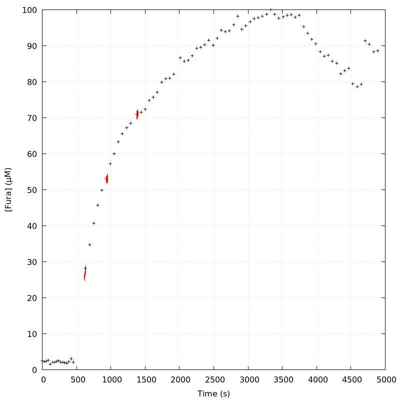
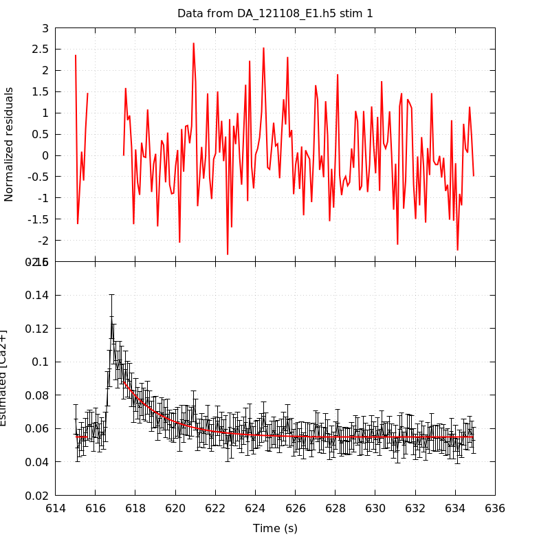
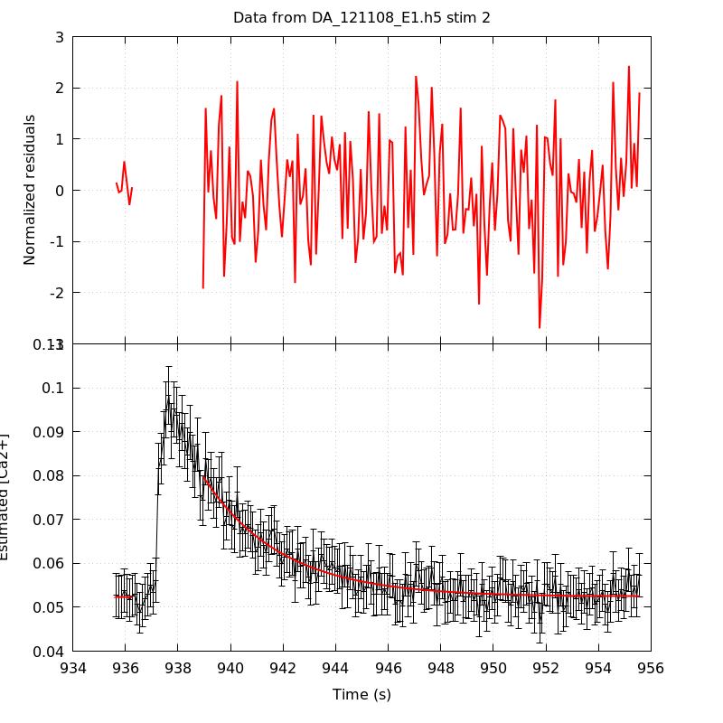
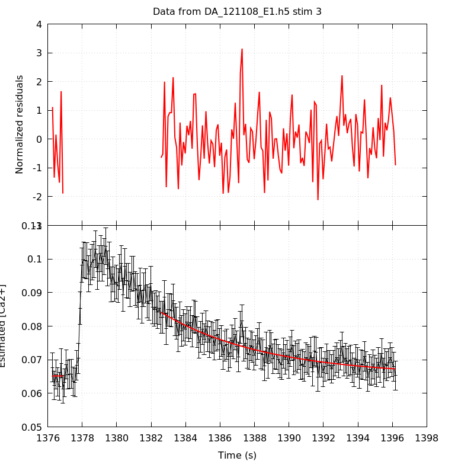
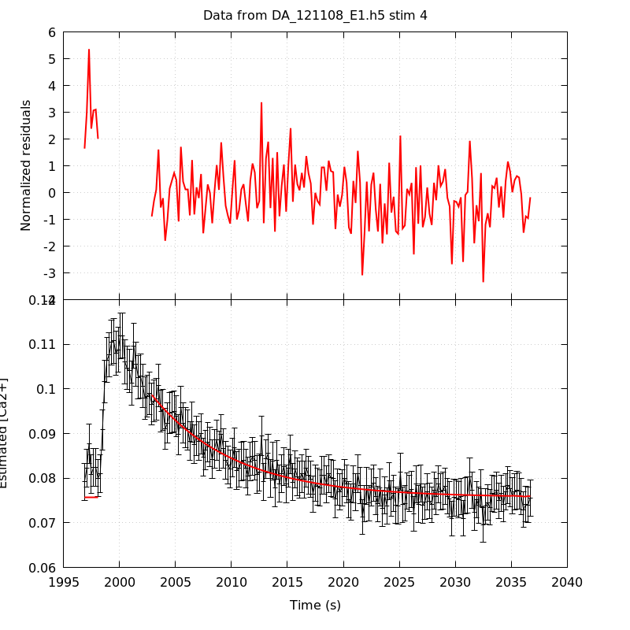
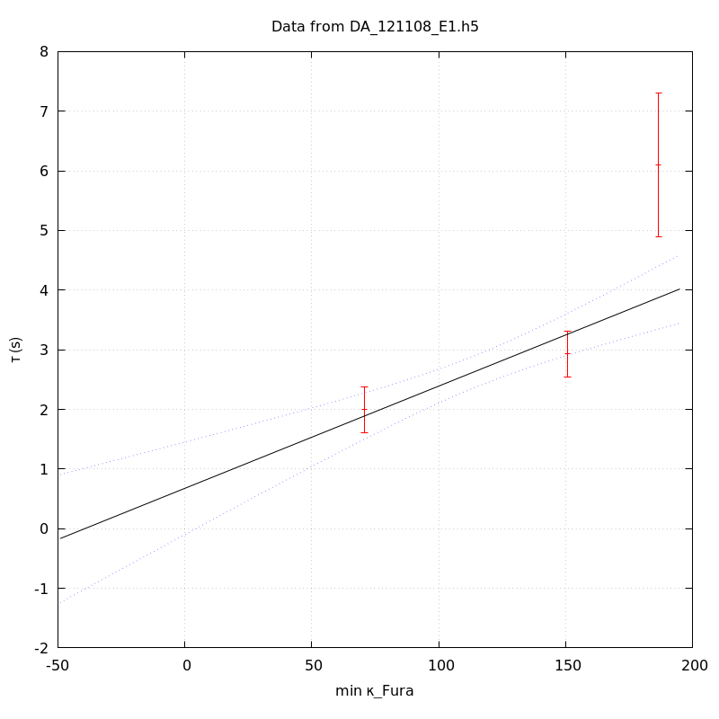
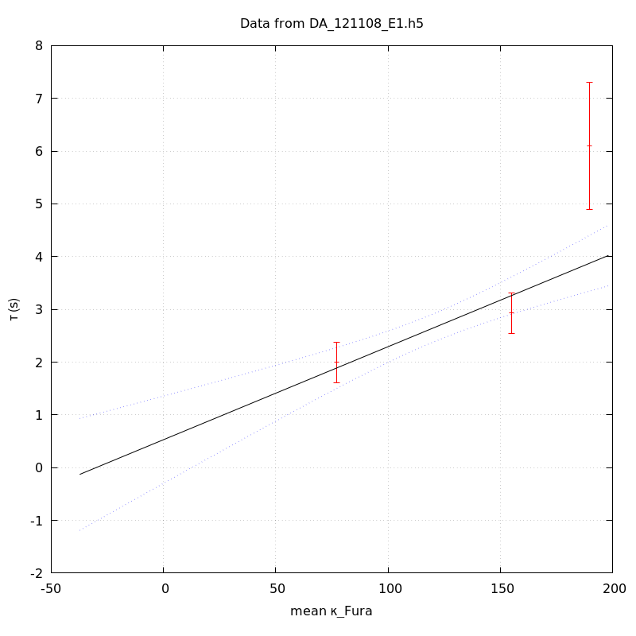
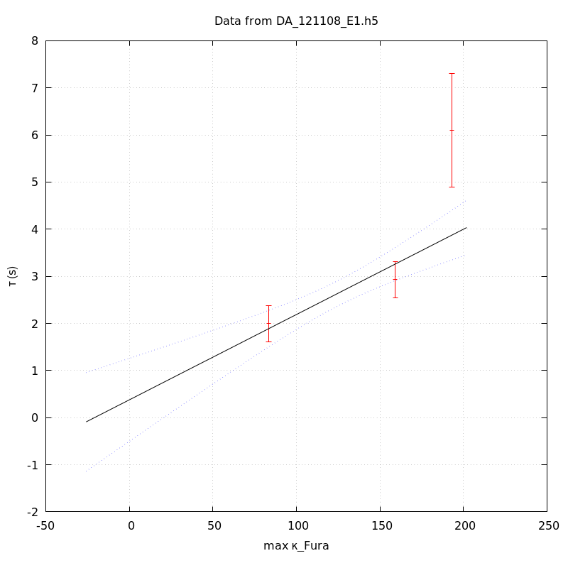

The baseline length is: 7.
When fitting tau against kappa_Fura only the transients for which the fit RSS and the lag 1 auto-correlation of the residuals were small enough, giving an overall probability of false negative of 0.02, were kept (see the numerical summary associated with each transient).
The good transients are: 1, 2, 3.
The time at which the 'good' transients were recorded appear in red.

On each graph, the residuals appear on top. Under the null hypothesis, if the monoexponential fit is correct they should be centered on 0 and have a SD close to 1 (not exactly 1 since parameters were obtained through the fitting procedure form the data.
The estimated [Ca2+] appears on the second row. The estimate is show in black together with pointwise 95% confidence intervals. The fitted curve appears in red. The whole transient is not fitted, only a portion of it is: a portion of the baseline made of 7 points and the decay phase starting at the time where the Delta[Ca2+] has reached 50% of its peak value.
The time appearing on the abscissa is the time from the beginning of the experiment.
Transient 1 is 'good'.

nobs = 183
number of degrees of freedom = 180
baseline length = 7
fit started from point 24
estimated baseline 0.0548853 and standard error 0.000402974
estimated delta 0.0332599 and standard error 0.00217027
estimated tau 1.99378 and standard error 0.199313
residual sum of squares: 168.541
RSS per degree of freedom: 0.936341
Probability of observing a larger of equal RSS per DOF under the null hypothesis: 0.719683
Lag 1 residuals auto-correlation: 0.048
Pr[Lag 1 auto-corr. > 0.048] = 0.213
Transient 2 is 'good'.

nobs = 174
number of degrees of freedom = 171
baseline length = 7
fit started from point 33
estimated baseline 0.0523869 and standard error 0.000314945
estimated delta 0.0274604 and standard error 0.00101321
estimated tau 2.92963 and standard error 0.197633
residual sum of squares: 179.913
RSS per degree of freedom: 1.05212
Probability of observing a larger of equal RSS per DOF under the null hypothesis: 0.305118
Lag 1 residuals auto-correlation: -0.072
Pr[Lag 1 auto-corr. > -0.072] = 0.796
Transient 3 is 'good'.

nobs = 144
number of degrees of freedom = 141
baseline length = 7
fit started from point 63
estimated baseline 0.065251 and standard error 0.00067101
estimated delta 0.0188987 and standard error 0.000765734
estimated tau 6.09501 and standard error 0.615253
residual sum of squares: 135.816
RSS per degree of freedom: 0.963232
Probability of observing a larger of equal RSS per DOF under the null hypothesis: 0.607479
Lag 1 residuals auto-correlation: 0.025
Pr[Lag 1 auto-corr. > 0.025] = 0.336
Transient 4 is a 'bad'.

nobs = 177
number of degrees of freedom = 174
baseline length = 7
fit started from point 30
estimated baseline 0.0757214 and standard error 0.000316306
estimated delta 0.0229617 and standard error 0.000745726
estimated tau 7.37169 and standard error 0.500271
residual sum of squares: 259.686
RSS per degree of freedom: 1.49245
Probability of observing a larger of equal RSS per DOF under the null hypothesis: 2.71725e-05
WARNING: THE FIT IS NOT GOOD!
Lag 1 residuals auto-correlation: 0.297
Pr[Lag 1 auto-corr. > 0.297] = 0.000
Since the [Fura] changes during a transient (and it can change a lot during the early transients), the unique value to use as '[Fura]' is not obvious. We therefore perform 3 fits: one using the minimal value, one using the mean and one using the maximal value.
The observed tau (shown in red) are displayed with a 95% confidence interval that results from the fitting procedure and is therefore meaningful only if the fit is correct!
No serious attempt at quantifying the precision of [Fura] and therefore kappa_Fura has been made since the choice of which [Fura] to use has a larger effect and since the other dominating effect is often the certainty we can have that the saturating value (the [Fura] in the pipette) has been reached.
The straight line in black is the result of a weighted linear regression. The blue dotted lines correspond to the limits of pointwise 95% confidence intervals.

Best fit: tau = 0.676264 + 0.0171388 kappa_Fura
Covariance matrix:
[ +1.56689e-01, -1.20098e-03
-1.20098e-03, +1.04542e-05 ]
Total sum of squares (TSS) = 44.193
chisq (Residual sum of squares, RSS) = 16.0955
Probability of observing a larger of equal RSS per DOF under the null hypothesis: 6.02258e-05
R squared (1-RSS/TSS) = 0.63579
Estimated gamma/v with standard error: 58.3473 +/- 11.0075
Estimates kappa_S with standard error (using error propagation): 38.4582 +/- 24.2661
kappa_S confidence intervals based on parametric bootstrap
0.95 CI for kappa_S: [-5.58742,131.51]
0.99 CI for kappa_S: [-15.7548,186.719]

Best fit: tau = 0.529794 + 0.0176248 kappa_Fura
Covariance matrix:
[ +1.78187e-01, -1.32864e-03
-1.32864e-03, +1.10700e-05 ]
Total sum of squares (TSS) = 44.193
chisq (Residual sum of squares, RSS) = 16.1321
Probability of observing a larger of equal RSS per DOF under the null hypothesis: 5.90729e-05
R squared (1-RSS/TSS) = 0.634962
Estimated gamma/v with standard error: 56.7382 +/- 10.7109
Estimates kappa_S with standard error (using error propagation): 29.0596 +/- 24.6135
kappa_S confidence intervals based on parametric bootstrap
0.95 CI for kappa_S: [-13.5835,120.546]
0.99 CI for kappa_S: [-22.0695,183.558]

Best fit: tau = 0.377723 + 0.0181103 kappa_Fura
Covariance matrix:
[ +2.01694e-01, -1.46143e-03
-1.46143e-03, +1.16727e-05 ]
Total sum of squares (TSS) = 44.193
chisq (Residual sum of squares, RSS) = 16.0946
Probability of observing a larger of equal RSS per DOF under the null hypothesis: 6.02546e-05
R squared (1-RSS/TSS) = 0.635811
Estimated gamma/v with standard error: 55.2172 +/- 10.4168
Estimates kappa_S with standard error (using error propagation): 19.8568 +/- 25.1085
kappa_S confidence intervals based on parametric bootstrap
0.95 CI for kappa_S: [-22.2469,103.343]
0.99 CI for kappa_S: [-31.2335,154.646]
3 out of 4 transients were kept.
sigma(tau): 0.199313, 0.197633, 0.615253
Residual correlation at lag 1: 0.04832951825482965, -0.07243591245147639, 0.02465864153833827
Probablity of a correlation at lag 1 smaller or equal than observed: 0.21299999999999997, 0.796, 0.33599999999999997
RSS/DOF: 0.936341, 1.05212, 0.963232